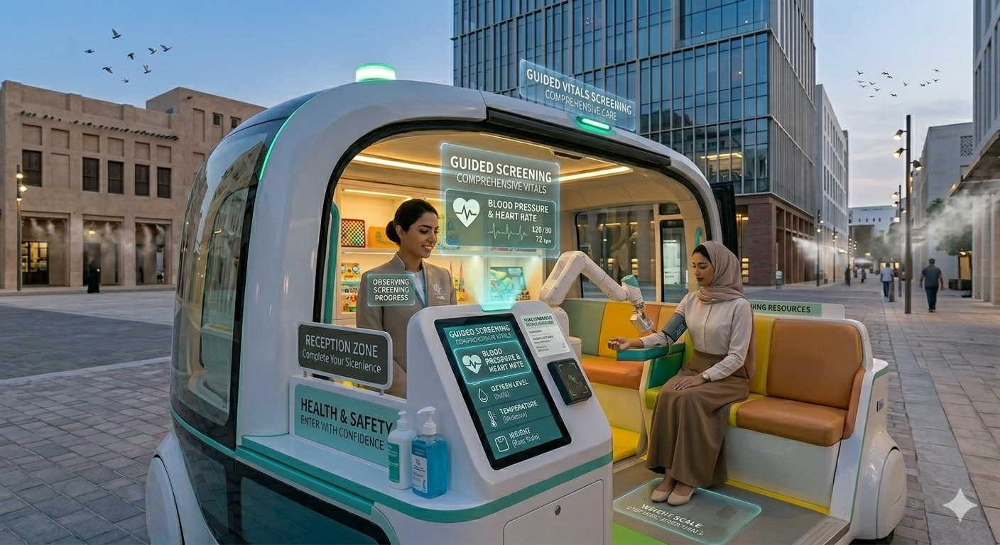
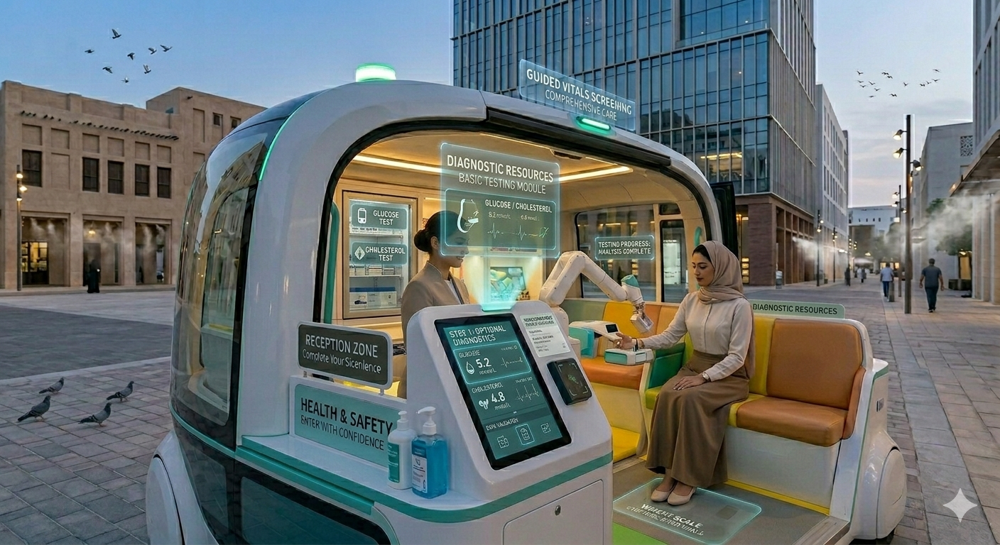
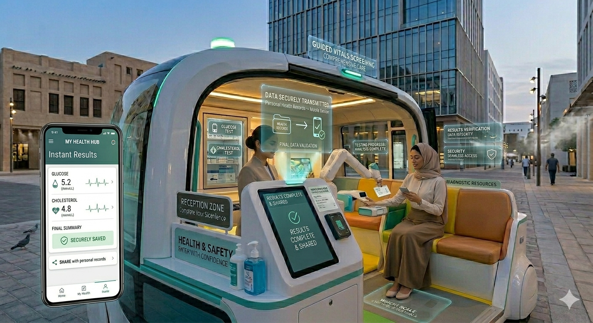
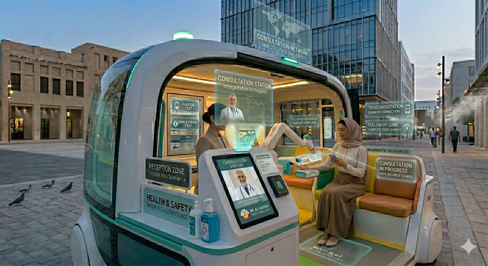

Autonomous Health Screening / Mini-Clinic
A self-driving mobile health unit equipped with essential medical devices performing routine screenings and check-ups. Bringing preventive healthcare directly to campuses, workplaces, and communities with on-demand accessibility and professional care.
Addressing uneven access to routine healthcare with an autonomous mobile clinic that brings essential screenings directly to where people work, study, and live.
Fully equipped interior designed for privacy, hygiene, and professional medical care with certified screening equipment
Self-driving capability enables scheduled routes and on-demand deployment to campuses, industrial zones, and communities
Blood pressure, heart rate, oxygen saturation, temperature, weight, and basic blood tests for early detection
Secure check-in, instant digital results, and seamless integration with electronic health records
Optional remote medical supervision and real-time consultation with healthcare professionals
Full compliance with healthcare data protection regulations and medical device certification standards
Every element designed to deliver professional healthcare services with comfort and efficiency
Small reception area with secure identification and patient registration systems
One or two equipped stations with certified medical devices for comprehensive vital signs monitoring
Comfortable seating with adjustable lighting ensuring a calm, professional environment
Onboard displays guiding users through each screening step with clear instructions
Capability for glucose and cholesterol testing with immediate digital results
Strict sanitation protocols and medical waste management systems ensuring safety
A streamlined healthcare experience from check-in to results
Enter the mobile clinic and complete digital check-in using secure identification at the reception station.

Follow onboard displays through comprehensive vital signs screening including blood pressure, heart rate, oxygen levels, temperature, and weight.

If needed, receive basic blood tests for glucose and cholesterol levels with medical-grade testing equipment.

Receive immediate digital results securely transmitted to your personal health records and mobile device.

Connect with healthcare professionals remotely for result interpretation, advice, or follow-up recommendations.
Cutting-edge systems ensuring safe, accurate, and compliant healthcare delivery
Safe navigation and precise positioning in urban, campus, and industrial environments with reliable operation
Integrated, certified screening equipment meeting all medical device standards and regulatory requirements
Protected transmission of medical data to backend healthcare platforms with end-to-end encryption
Advanced data processing, analytics, and seamless integration with electronic health records (EHRs)
Comprehensive privacy protection and full compliance with healthcare data protection regulations
Real-time video consultation capabilities connecting patients with remote medical professionals
Connecting patients, providers, and stakeholders in preventive care delivery
Brings preventive healthcare and early diagnosis directly to underserved populations and remote areas
Decreases burden on traditional clinics and emergency services through proactive screening
Scalable and flexible healthcare delivery model reducing infrastructure and operational costs
Identifies health issues before they become serious, improving outcomes and reducing treatment costs
Strong integration with digital health strategies and smart city healthcare initiatives
Enables large-scale preventive care programs and continuous health monitoring of communities
Join the future of preventive medicine with mobile health screening that brings professional medical services directly to your employees, students, and community members. Perfect for organizations committed to wellness and early intervention.